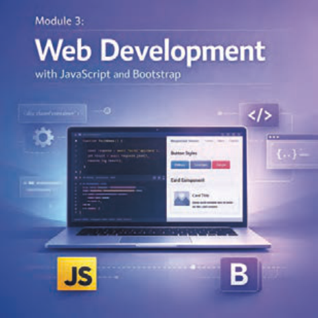

معرفی پودمان تعاملی
پودمان سوم
صفحه ۱۴۵
پودمان سوم
تولید صفحات وب تعاملی

تولید صفحات وب تعاملی به معنای ایجاد تجربهای پویا و جذاب برای کاربران است که فراتر از نمایش ساده و بدون تغییر اطلاعات میباشد. امروزه وبسایتها ابزارهای اصلی ارتباط و تبادل اطلاعات هستند، بنابراین باید بتوانند با کاربران خود تعامل داشته باشند. منظور از تعامل با کاربران این است که عناصر وبسایت امکان پاسخدهی به فعالیتهای کاربر را داشته باشند، مانند پاسخگویی به کلیکها و پر کردن اطلاعات فرم. استفاده از زبانهای برنامهنویسی مانند جاوااسکریپت (JavaScript) امکان تعریف پاسخ برای فعالیتهای کاربران را فراهم میکند. جاوااسکریپت با ایجاد انیمیشنها و جلوههای بصری، جذابیت بیشتری به صفحات میبخشد و کاربران را به ماندن و کاوش بیشتر ترغیب میکند. علاوه بر قدرت جاوااسکریپت در ایجاد تعامل، انتخاب یک فریمورک مناسب تأثیر زیادی بر زیبایی و سرعت ساخت سایت دارد. بوتاسترپ (Bootstrap) به عنوان یک فریمورک قدرتمند فرانتاند، با ارائه مجموعهای از کلاسهای CSS آماده و کامپوننتهای جاوااسکریپتی، فرایند طراحی رابطهای کاربری مدرن و واکنشگرا را تسهیل میکند. این ابزار به توسعهدهندگان امکان میدهد که بدون درگیر شدن با پیچیدگیهای کدنویسی پایه، بر روی خلق تجربههای تعاملی و جذاب تمرکز کنند و صفحاتی بسازند که در تمام دستگاهها به شکلی حرفهای و یکسان نمایش داده شوند.
صفحات وب تعاملی و واکنشگرا علاوه بر بهبود تجربه کاربری، امکان شکلگیری ارتباطات مؤثر و ایجاد اعتماد بین کاربران و وبسایتها را فراهم میکنند. در این پودمان، با یادگیری اصول برنامهنویسی جاوااسکریپت و کار با کلاسهای بوتاسترپ، مهارت طراحی صفحات وب تعاملی و واکنشگرا را فرا خواهید گرفت.
Poodman 3
Page 145
Poodman 3
Creating interactive web pages
Creating interactive web pages means building a dynamic and engaging experience for users that goes beyond simply displaying static, unchanging information. Today, websites are the main tools for communication and exchanging information, so they must be able to interact with their users. Interaction with users means that website elements can respond to user actions, such as responding to clicks and filling in form information. Using programming languages such as JavaScript (JavaScript) makes it possible to define responses to user actions. By creating animations and visual effects, JavaScript adds more appeal to pages and encourages users to stay and explore further. In addition to the power of JavaScript for creating interaction, choosing a suitable framework has a large effect on the appearance and speed of building a site. Bootstrap (Bootstrap), as a powerful front-end framework, provides a set of ready-made CSS classes and JavaScript components that make designing modern, responsive user interfaces easier. This tool lets developers focus on creating interactive and engaging experiences without getting caught up in the complexity of basic coding, and build pages that display professionally and consistently on all devices.
Interactive and responsive web pages not only improve the user experience; they also make it possible to form effective communication and build trust between users and websites. In this poodman, by learning the principles of JavaScript programming and working with Bootstrap classes, you will gain the skill of designing interactive and responsive web pages.